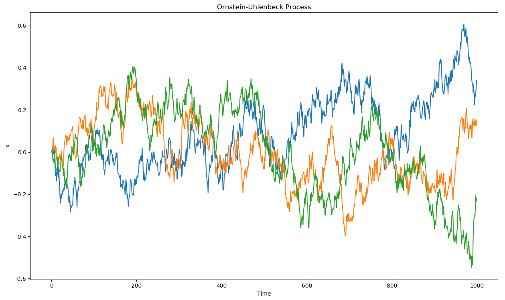
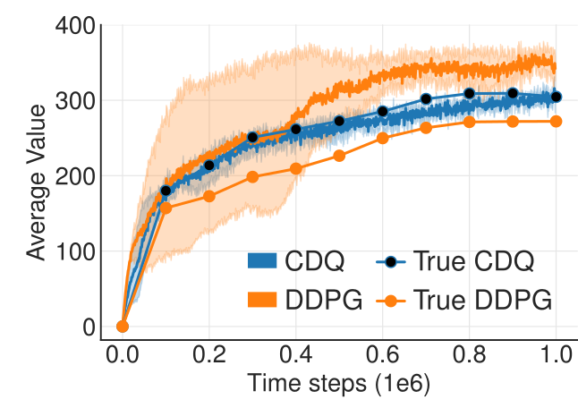

Deep Deterministic Policy Gradient (DDPG)
Deterministic policy gradient theorem
Problem with stochastic policies
Actor-critic methods are strictly on-policy: the transitions used to train the critic must be generated by the current version of the actor.
\nabla_\theta \mathcal{J}(\theta) = \mathbb{E}_{s_t \sim \rho_\theta, a_t \sim \pi_\theta}[\nabla_\theta \log \pi_\theta (s_t, a_t) \, (R_t - V_\varphi(s_t)) ]
\mathcal{L}(\varphi) = \mathbb{E}_{s_t \sim \rho_\theta, a_t \sim \pi_\theta}[(R_t - V_\varphi(s_t))^2]
Past transitions cannot be reused to train the actor (no replay memory). Domain knowledge cannot be used to guide the exploration.
The learned policy \pi_\theta(s, a) is stochastic. This generates a lot of variance in the obtained returns, therefore in the gradients. This can greatly impair learning (bad convergence) and slow it down (sample complexity). We would not have this problem if the policy was deterministic as in off-policy methods.
The objective function that we tried to maximize until now is :
\mathcal{J}(\theta) = \mathbb{E}_{\tau \sim \rho_\theta}[R(\tau)]
i.e. we want the returns of all trajectories generated by the stochastic policy \pi_\theta to be maximal.
It is equivalent to say that we want the value of all states visited by the policy \pi_\theta to be maximal: a policy \pi is better than another policy \pi' if its expected return is greater or equal than that of \pi' for all states s.
\pi > \pi' \Leftrightarrow V^{\pi}(s) > V^{\pi'}(s) \quad \forall s \in \mathcal{S}
The objective function can be rewritten as:
\mathcal{J}'(\theta) = \mathbb{E}_{s \sim \rho_\theta}[V^{\pi_\theta}(s)]
where \rho_\theta now represents the state visitation distribution, i.e. how often a state s will be visited by the policy \pi_\theta.
The two objective functions:
\mathcal{J}(\theta) = \mathbb{E}_{\tau \sim \rho_\theta}[R(\tau)]
and:
\mathcal{J}'(\theta) = \mathbb{E}_{s \sim \rho_\theta}[V^{\pi_\theta}(s)]
are not the same: \mathcal{J} has different values than \mathcal{J}'.
However, they have a maximum for the same optimal policy \pi^* and their gradient is the same:
\nabla_\theta \, \mathcal{J}(\theta) = \nabla_\theta \, \mathcal{J}'(\theta)
If a change in the policy \pi_\theta increases the return of all trajectories, it also increases the value of the visited states. Take-home message: their policy gradient is the same, we have the right to re-define the problem like this.
g = \nabla_\theta \, \mathcal{J}(\theta) = \mathbb{E}_{s \sim \rho_\theta}[\nabla_\theta \, V^{\pi_\theta}(s)]
Deterministic policy gradient
When introducing Q-values, we obtain the following policy gradient:
g = \nabla_\theta \, \mathcal{J}(\theta) = \mathbb{E}_{s \sim \rho_\theta}[\nabla_\theta \, V^{\pi_\theta}(s)] = \mathbb{E}_{s \sim \rho_\theta}[\sum_a \nabla_\theta \, \pi_\theta(s, a) \, Q^{\pi_\theta}(s, a)]
This formulation necessitates to integrate overall possible actions.
- Not possible with continuous action spaces.
- The stochastic policy adds a lot of variance.
But let’s suppose that the policy is deterministic, i.e. it takes a single action in state s. We can note this deterministic policy \mu_\theta(s), with:
\begin{aligned} \mu_\theta : \; \mathcal{S} & \rightarrow \mathcal{A} \\ s & \; \rightarrow \mu_\theta(s) \\ \end{aligned}
The deterministic policy gradient becomes:
g = \nabla_\theta \, \mathcal{J}(\theta) = \mathbb{E}_{s \sim \rho_\theta}[\nabla_\theta \, Q^{\mu_\theta}(s, \mu_\theta(s))]
We can now use the chain rule to decompose the gradient of Q^{\mu_\theta}(s, \mu_\theta(s)):
\nabla_\theta \, Q^{\mu_\theta}(s, \mu_\theta(s)) = \nabla_a \, Q^{\mu_\theta}(s, a)|_{a = \mu_\theta(s)} \times \nabla_\theta \mu_\theta(s)
\nabla_a \, Q^{\mu_\theta}(s, a)|_{a = \mu_\theta(s)} means that we differentiate Q^{\mu_\theta} w.r.t. a, and evaluate it in \mu_\theta(s). a is a variable, but \mu_\theta(s) is a deterministic value (constant).
\nabla_\theta \mu_\theta(s) tells how the output of the policy network varies with the parameters of NN: automatic differentiation frameworks such as tensorflow can tell you that.
Off-policy actor-critic
As always, you do not know the true Q-value Q^{\mu_\theta}(s, a), because you search for the policy \mu_\theta. (Silver et al., 2014) showed that you can safely (without introducing any bias) replace the true Q-value with an estimate Q_\varphi(s, a), as long as the estimate minimizes the mse with the TD target:
Q_\varphi(s, a) \approx Q^{\mu_\theta}(s, a)
\mathcal{L}(\varphi) = \mathbb{E}_{s \sim \rho_\theta}[(r(s, \mu_\theta(s)) + \gamma \, Q_\varphi(s', \mu_\theta(s')) - Q_\varphi(s, \mu_\theta(s)))^2]
We come back to an actor-critic architecture:
- The deterministic actor \mu_\theta(s) selects a single action in state s.
- The critic Q_\varphi(s, a) estimates the value of that action.

Training the actor:
\nabla_\theta \mathcal{J}(\theta) = \mathbb{E}_{s \sim \rho_\theta}[\nabla_\theta \mu_\theta(s) \times \nabla_a Q_\varphi(s, a) |_{a = \mu_\theta(s)}]
Training the critic:
\mathcal{L}(\varphi) = \mathbb{E}_{s \sim \rho_\theta}[(r(s, \mu_\theta(s)) + \gamma \, Q_\varphi(s', \mu_\theta(s')) - Q_\varphi(s, \mu_\theta(s)))^2]
If you act off-policy, i.e. you visit the states s using a behavior policy b, you would theoretically need to correct the policy gradient with importance sampling:
\nabla_\theta \mathcal{J}(\theta) = \mathbb{E}_{s \sim \rho_b}[\sum_a \, \frac{\pi_\theta(s, a)}{b(s, a)} \, \nabla_\theta \mu_\theta(s) \times \nabla_a Q_\varphi(s, a) |_{a = \mu_\theta(s)}]
But your policy is now deterministic: the actor only takes the action a=\mu_\theta(s) with probability 1, not \pi(s, a). The importance weight is 1 for that action, 0 for the other. You can safely sample states from a behavior policy, it won’t affect the deterministic policy gradient:
\nabla_\theta \mathcal{J}(\theta) = \mathbb{E}_{s \sim \rho_b}[\nabla_\theta \mu_\theta(s) \times \nabla_a Q_\varphi(s, a) |_{a = \mu_\theta(s)}]
The critic uses Q-learning, so it is also off-policy. DPG is an off-policy actor-critic architecture!
DDPG: Deep Deterministic Policy Gradient
As the name indicates, DDPG (Lillicrap et al., 2015) is the deep variant of DPG for continuous control. It uses the DQN tricks to stabilize learning with deep networks:
- As DPG is off-policy, an experience replay memory can be used to sample experiences.
- The actor \mu_\theta learns using sampled transitions with DPG.
- The critic Q_\varphi uses Q-learning on sampled transitions: target networks can be used to cope with the non-stationarity of the Bellman targets.
Contrary to DQN, the target networks are not updated every once in a while, but slowly integrate the trained networks after each update (moving average of the weights):
\theta' \leftarrow \tau \theta + (1-\tau) \, \theta'
\varphi' \leftarrow \tau \varphi + (1-\tau) \, \varphi'
A deterministic actor is good for learning (less variance), but not for exploring. We cannot use \epsilon-greedy or softmax, as the actor outputs directly the policy, not Q-values. For continuous actions, an exploratory noise can be added to the deterministic action:
a_t = \mu_\theta(s_t) + \xi_t
Ex: if the actor wants to move the joint of a robot by 2^o, it will actually be moved from 2.1^o or 1.9^o.
In DDPG, an Ornstein-Uhlenbeck stochastic process (Uhlenbeck and Ornstein, 1930) is used to add noise to the continuous actions. It is defined by a stochastic differential equation, classically used to describe Brownian motion:
dx_t = \theta (\mu - x_t) dt + \sigma dW_t \qquad \text{with} \qquad dW_t = \mathcal{N}(0, dt)
The temporal mean of x_t is \mu= 0, its amplitude is \theta (exploration level), its speed is \sigma.

Another approach to ensure exploration is to add noise to the parameters \theta of the actor at inference time. For the same input s_t, the output \mu_\theta(s_t) will be different every time. The NoisyNet (Fortunato et al., 2017) approach can be applied to any deep RL algorithm to enable a smart state-dependent exploration (e.g. Noisy DQN).
DDPG allows to learn continuous policies: there can be one tanh output neuron per joint in a robot. The learned policy is deterministic: this simplifies learning as we do not need to integrate over the action space after sampling. Exploratory noise (e.g. Ohrstein-Uhlenbeck) has to be added to the selected action during learning in order to ensure exploration. DDPG allows to use an experience replay memory, reusing past samples (better sample complexity than A3C).

The algorithm of (Kendall et al., 2018) is based on DDPG with prioritized experience replay. Training is live, with an on-board NVIDIA Drive PX2 GPU. A simulated environment is first used to find the hyperparameters. A variational autoencoder (VAE) is optionally use to pretrain the convolutional layers on random episodes.
More info: https://wayve.ai/blog/learning-to-drive-in-a-day-with-reinforcement-learning
TD3 - Twin Delayed Deep Deterministic policy gradient
DDPG suffers from several problems:
- Unstable (catastrophic forgetting, policy collapse).
- Brittleness (sensitivity to hyperparameters such as learning rates).
- Overestimation of Q-values.
Policy collapse happens when the bias of the critic is too high for the actor. Example with A2C:

TD3 (Fujimoto et al., 2018) has been introduced to fix the problems of DDPG.
Twin critics against overestimation
As any Q-learning-based method, DDPG overestimates Q-values. The Bellman target t = r + \gamma \, \max_{a'} Q(s', a') uses a maximum over other values, so it is increasingly overestimated during learning. After a while, the overestimated Q-values disrupt training in the actor.

Double Q-learning solves the problem by using the target network \theta' to estimate Q-values, but the value network \theta to select the greedy action in the next state:
\mathcal{L}(\theta) = \mathbb{E}_\mathcal{D} [(r + \gamma \, Q_{\theta'}(s´, \text{argmax}_{a'} Q_{\theta}(s', a')) - Q_\theta(s, a))^2]
The idea is to use two different independent networks to reduce overestimation. This does not work well with DDPG, as the Bellman target t = r + \gamma \, Q_{\varphi'}(s', \mu_{\theta'}(s')) uses a target actor network that is not very different from the trained deterministic actor.
TD3 uses two critics \varphi_1 and \varphi_2 (and target critics): the Q-value used to train the actor will be the lesser of two evils, i.e. the minimum Q-value:
t = r + \gamma \, \min(Q_{\varphi'_1}(s', \mu_{\theta'}(s')), Q_{\varphi'_2}(s', \mu_{\theta'}(s')))
One of the critic will always be less over-estimating than the other. Better than nothing… Using twin critics is called clipped double learning.
Both critics learn in parallel using the same target:
\mathcal{L}(\varphi_1) = \mathbb{E}[(t - Q_{\varphi_1}(s, a))^2] \qquad ; \qquad \mathcal{L}(\varphi_2) = \mathbb{E}[ (t - Q_{\varphi_2}(s, a))^2]
The actor is trained using the first critic only:
\nabla_\theta \mathcal{J}(\theta) = \mathbb{E}[ \nabla_\theta \mu_\theta(s) \times \nabla_a Q_{\varphi_1}(s, a) |_{a = \mu_\theta(s)} ]
Delayed learning for stability
Another issue with actor-critic architecture in general is that the critic is always biased during training, what can impact the actor and ultimately collapse the policy:
\nabla_\theta \mathcal{J}(\theta) = \mathbb{E}[ \nabla_\theta \mu_\theta(s) \times \nabla_a Q_{\varphi_1}(s, a) |_{a = \mu_\theta(s)} ]
Q_{\varphi_1}(s, a) \approx Q^{\mu_\theta}(s, a)
The critic should learn much faster than the actor in order to provide unbiased gradients. Increasing the learning rate in the critic creates instability, reducing the learning rate in the actor slows down learning. The solution proposed by TD3 is to delay the update of the actor, i.e. update it only every d minibatches:
- Train the critics \varphi_1 and \varphi_2 on the minibatch.
- every d steps:
- Train the actor \theta on the minibatch.
This leaves enough time to the critics to improve their prediction and provides less biased gradients to the actor.
Target exploration
A last problem with deterministic policies is that they tend to always select the same actions \mu_\theta(s) (overfitting). For exploration, some additive noise is added to the selected action:
a = \mu_\theta(s) + \xi
But this is not true for the Bellman targets, which use the deterministic action:
t = r + \gamma \, Q_{\varphi}(s', \mu_{\theta}(s'))
TD3 proposes to also use additive noise in the Bellman targets:
t = r + \gamma \, Q_{\varphi}(s', \mu_{\theta}(s') + \xi)
If the additive noise is zero on average, the Bellman targets will be correct on average (unbiased) but will prevent overfitting of particular actions. The additive noise does not have to be an Ornstein-Uhlenbeck stochastic process, but could simply be a random variable:
\xi \sim \mathcal{N}(0, 1)
Algorithm
TD3 (Fujimoto et al., 2018) introduces three major changes to DDPG:
- twin critics.
- delayed actor updates.
- noisy Bellman targets.
TD3 outperforms DDPG (but also PPO and SAC) on continuous control tasks.

D4PG: Distributed Distributional DDPG
D4PG (Distributed Distributional DDPG, (Barth-Maron et al., 2018)) combines:
- Deterministic policy gradient as in DDPG:
\nabla_\theta \mathcal{J}(\theta) = \mathbb{E}_{s \sim \rho_b}[\nabla_\theta \mu_\theta(s) \times \nabla_a \mathbb{E} [\mathcal{Z}_\varphi(s, a)] |_{a = \mu_\theta(s)}]
- Distributional critic: The critic does not predict single Q-values Q_\varphi(s, a), but the distribution of returns \mathcal{Z}_\varphi(s, a) (as in Categorical DQN):
\mathcal{L}(\varphi) = \mathbb{E}_{s \in \rho_b} [ \text{KL}(\mathcal{T} \, \mathcal{Z}_\varphi(s, a) || \mathcal{Z}_\varphi(s, a))]
- n-step returns (as in A3C):
\mathcal{T} \, \mathcal{Z}_\varphi(s_t, a_t)= \sum_{k=0}^{n-1} \gamma^{k} \, r_{t+k+1} + \gamma^n \, \mathcal{Z}_\varphi(s_{t+n}, \mu_\theta(s_{t+n}))
Distributed workers: D4PG uses K=32 or 64 copies of the actor to fill the ERM in parallel.
Prioritized Experience Replay (PER):
P(k) = \frac{(|\delta_k| + \epsilon)^\alpha}{\sum_k (|\delta_k| + \epsilon)^\alpha}
It could be called the Rainbow DDPG.